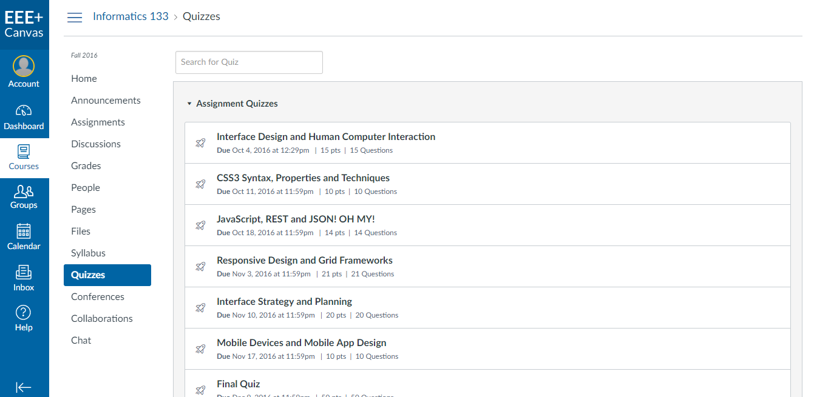
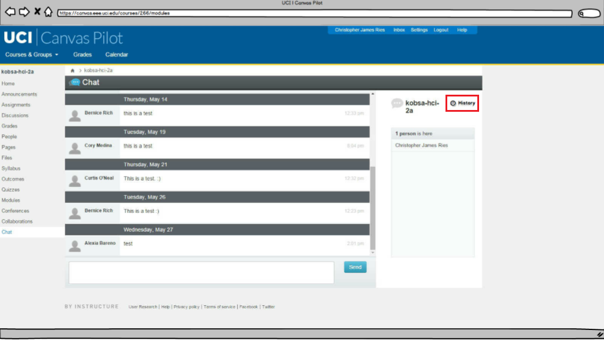

Canvas: An Evaluation of a Course Management System
UX Research — Web

UX Research — Web
Canvas is a course management system that at the time was being considered for full integration at UCI. During the pilot period, we were tasked to evaluate the Canvas interface to determine two things: Were there any issues present? and What do students think of the system?
The system allows instructors to manage their class by uploading readings, assigning tests, quizzes and homework, and updating/releasing grades. Students can access assignments, tests, quizzes, turn in completed assignments, engage in discussions with peers, and view their grades.
I worked on this project with three peers from my Human-Computer Interaction and Evaluation class at UC Irvine. Together, we compiled our findings into a research document delivered to the UCI Office of Information Technology. A peer and I were responsible for conducting heuristic evaluations, cognitive walk-throughs, interviews, and usability tests.
I began by logging into Canvas and familiarizing myself with all sections of the site. I didn't have a hard time navigating it and there weren't any major issues that I had come across. After spending some time looking at Canvas alone, I regrouped with my team to discuss what we felt could be improved and tested.
To prepare for the think aloud sessions, I first sent out an email to confirm with the participants about our meeting time and to let them know what to expect so that they didn't feel uncomfortable during the session. Several days before the session, I created a set of tasks for the students to complete and ran them by my team to make sure that the potential issues they wanted to look into were included.
Our tasks tested the usability of the Canvas system by focusing on the following functionalities: announcements, discussions, people, files, outcomes, modules, collaborations, and chat.
On the day of the session, one of my peers and I met with three students individually. I made sure to introduce myself so that I could break the ice and make the students feel comfortable about speaking to me during testing. I had read on UXPin that users feel more comfortable when they are reminded that they're testing the product and not their abilities. Letting them know that the product does not belong to our team makes them feel at ease and less likely to hold back on their thoughts, so I ended up following UXPin's advice and it helped a lot.
Conducting usability tests wasn't as easy as I had imagined. The urge to help users while they were having a problem was very strong at some points, but I knew not to interfere because then I'd be introducing bias. I had learned in class that by letting users figure it out themselves, you can see unpredicted user behavior and workarounds that may inspire improvement.
After conducting my usability tests, our group came together to analyze our findings.
About 80% of our users shared that Canvas had a user-friendly interface. Despite the overall positive reaction, the interviewees brought up the following issues:
To correct these issues, we made some changes to Canvas as shown below. The goal was to make these available actions obvious to the user.
The font color for links was made darker.
Modules could be filtered by assignment type and sorted by due date and date posted.
A panel to add images to a post was introduced on the right. Users can see uploaded images.
A recognizable zip file icon was added.
The biggest issue we encountered while looking into the Outcomes feature was an error handling issue. This section details the instructor’s expectations for each assignment. The user may click and drag files but once they release the mouse button to where they would like to move it, nothing shifts.
If a user attempts to drag one of these files to the overarching folder at the top of the list, Canvas yields two error messages at the top of the screen and the system temporarily becomes unresponsive. Users, however, may still continue to click and drag the files which yields many error messages at the top of the page.

We flagged this as a major issue that required the developer's attention since it wasn't an interface problem.
Our full report found here provides complete details of our research and findings.
I was continually finding myself out of my comfort zone during this project. I was challenged to clearly express my thoughts among my group and with users. I overcame my fear of interviewing strangers by recognizing that I was there to help them. I learned that part of being a successful designer is knowing how to build rapport with users in order to have a testing session that yields valuable insight.
My takeaway from this class is that there's always room for improvement and usability tests are invaluable when trying to identify what needs to be fixed.